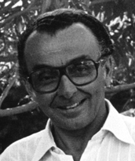

José dos Santos Freire nasceu em 18 de maio de 1928, em Arraias/TO. Formado em Direito pela UFG, atuou como fiscal de renda e produtor rural. Foi deputado estadual em 1955.Datos como deputado federal (1963–1991), sendo também secretário de Segurança Pública de Goiás no governo Iris Rezende. Constituinte em 1987, foi um dos principais articuladores da criação do Tocantins, sendo autor do projeto de lei que originou o novo Estado.
